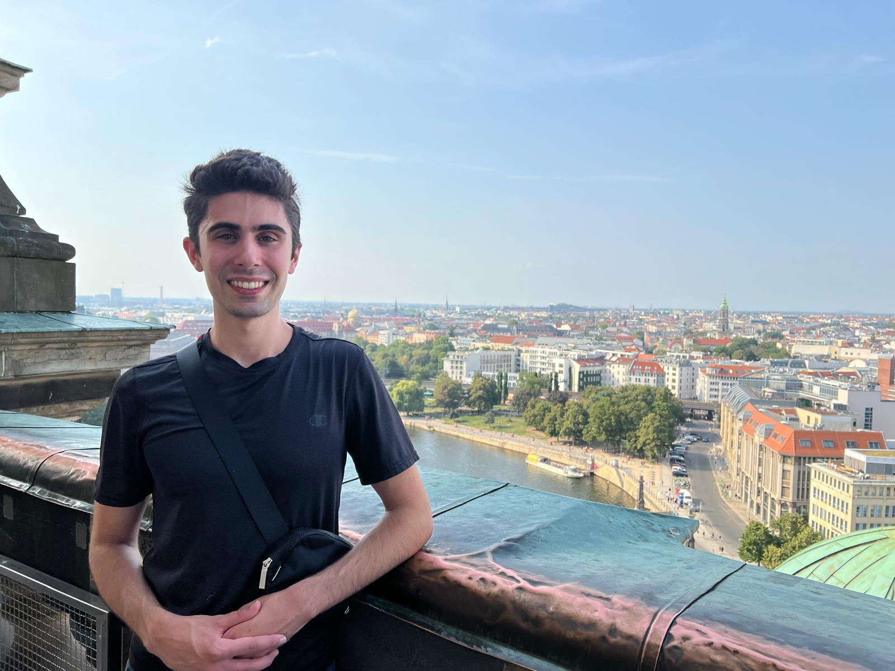

About me:
My name is Cyrus Young and starting in September 2026, I will be starting a PhD in the Centre for Photonics and Photonic Materials at the University of Bath in the UK under the supervision of Dr. Joe Chen and Dr. William Wadsworth. I was previously an Engineering Physics student at UBC and graduated with a degree in it in May of 2026.
I am passionate about physics (some of my favorite topics include Electromagnetic Theory, Optics, and Nuclear Physics) as well as more applied fields such as Digital Signal and Image Processing, Control Systems, Optics and Photonics.
My hobbies include running, playing sports with friends, and reading books on a variety of topics (I am currently reading The World at First Light: A New History of the Renaissance by Bernd Roeck).

Below is my CV (updated as of May 2026):